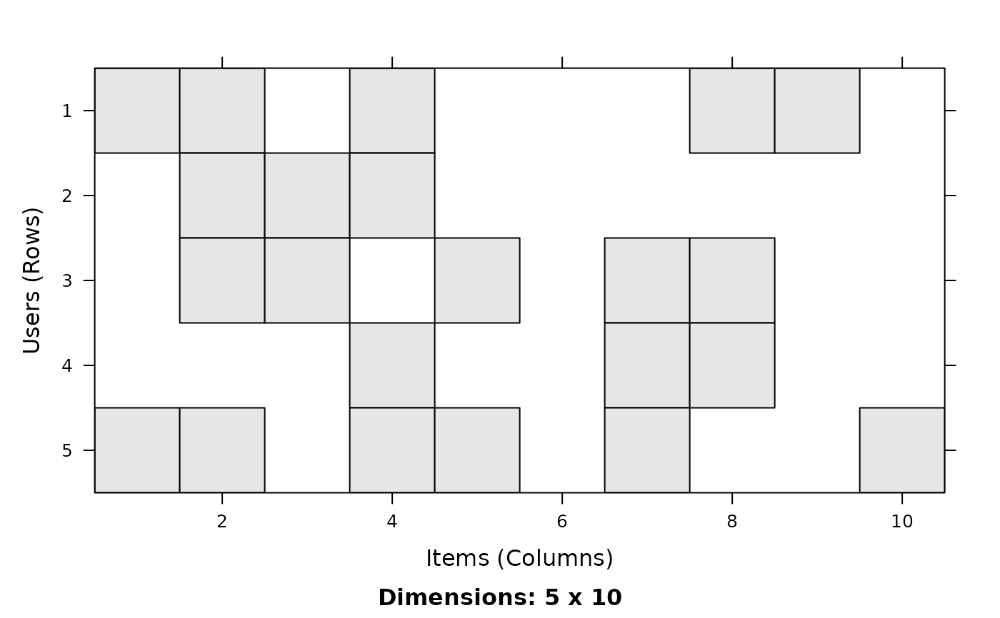

Class "binaryRatingMatrix": A Binary Rating Matrix
binaryRatingMatrix-class.RdA matrix to represent binary rating data. 1 codes for a positive rating and 0 codes for either no or a negative rating. This coding is common for market basked data where products are either bought or not.
Objects from the Class
Objects can be created by calls of the form new("binaryRatingMatrix", data = im), where im is an itemMatrix as defined in package
arules, by coercion from a matrix (all non-zero values will be a 1),
or by using binarize for
an object of class "realRatingMatrix".
Extends
Class "ratingMatrix", directly.
Methods
- coerce
signature(from = "matrix", to = "binaryRatingMatrix"): The matrix needs to be a logical matrix, or a 0-1 matrix (0 means FALSE and 1 means TRUE). NAs are interpreted as FALSE.- coerce
signature(from = "itemMatrix", to = "binaryRatingMatrix")- coerce
signature(from = "data.frame", to = "binaryRatingMatrix")- coerce
signature(from = "binaryRatingMatrix", to = "matrix")- coerce
signature(from = "binaryRatingMatrix", to = "dgTMatrix")- coerce
signature(from = "binaryRatingMatrix", to = "ngCMatrix")- coerce
signature(from = "binaryRatingMatrix", to = "dgCMatrix")- coerce
signature(from = "binaryRatingMatrix", to = "itemMatrix")- coerce
signature(from = "binaryRatingMatrix", to = "list")
% \item{dissimilarity}{\code{signature(x = "binaryRatingMatrix")}}
% \item{LIST}{\code{signature(from = "binaryRatingMatrix")}: ... }
See also
itemMatrix in arules,
getList.
Examples
## create a 0-1 matrix
m <- matrix(sample(c(0,1), 50, replace=TRUE), nrow=5, ncol=10,
dimnames=list(users=paste("u", 1:5, sep=''),
items=paste("i", 1:10, sep='')))
m
#> items
#> users i1 i2 i3 i4 i5 i6 i7 i8 i9 i10
#> u1 1 1 0 1 0 0 0 1 1 0
#> u2 0 1 1 1 0 0 0 0 0 0
#> u3 0 1 1 0 1 0 1 1 0 0
#> u4 0 0 0 1 0 0 1 1 0 0
#> u5 1 1 0 1 1 0 1 0 0 1
## coerce it into a binaryRatingMatrix
b <- as(m, "binaryRatingMatrix")
b
#> 5 x 10 rating matrix of class ‘binaryRatingMatrix’ with 22 ratings.
## coerce it back to see if it worked
as(b, "matrix")
#> i1 i2 i3 i4 i5 i6 i7 i8 i9 i10
#> u1 TRUE TRUE FALSE TRUE FALSE FALSE FALSE TRUE TRUE FALSE
#> u2 FALSE TRUE TRUE TRUE FALSE FALSE FALSE FALSE FALSE FALSE
#> u3 FALSE TRUE TRUE FALSE TRUE FALSE TRUE TRUE FALSE FALSE
#> u4 FALSE FALSE FALSE TRUE FALSE FALSE TRUE TRUE FALSE FALSE
#> u5 TRUE TRUE FALSE TRUE TRUE FALSE TRUE FALSE FALSE TRUE
## use some methods defined in ratingMatrix
dim(b)
#> [1] 5 10
dimnames(b)
#> [[1]]
#> [1] "u1" "u2" "u3" "u4" "u5"
#>
#> [[2]]
#> [1] "i1" "i2" "i3" "i4" "i5" "i6" "i7" "i8" "i9" "i10"
#>
## counts
rowCounts(b) ## number of ratings per user
#> u1 u2 u3 u4 u5
#> 5 3 5 3 6
colCounts(b) ## number of ratings per item
#> i1 i2 i3 i4 i5 i6 i7 i8 i9 i10
#> 2 4 2 4 2 0 3 3 1 1
## plot
image(b)

## sample and subset
sample(b,2)
#> 2 x 10 rating matrix of class ‘binaryRatingMatrix’ with 10 ratings.
b[1:2,1:5]
#> 2 x 5 rating matrix of class ‘binaryRatingMatrix’ with 6 ratings.
## coercion
as(b, "list")
#> $u1
#> [1] "i1" "i2" "i4" "i8" "i9"
#>
#> $u2
#> [1] "i2" "i3" "i4"
#>
#> $u3
#> [1] "i2" "i3" "i5" "i7" "i8"
#>
#> $u4
#> [1] "i4" "i7" "i8"
#>
#> $u5
#> [1] "i1" "i2" "i4" "i5" "i7" "i10"
#>
head(as(b, "data.frame"))
#> user item rating
#> 1 u1 i1 1
#> 3 u1 i2 1
#> 9 u1 i4 1
#> 18 u1 i8 1
#> 21 u1 i9 1
#> 4 u2 i2 1
head(getData.frame(b, ratings=FALSE))
#> user item
#> 1 u1 i1
#> 3 u1 i2
#> 9 u1 i4
#> 18 u1 i8
#> 21 u1 i9
#> 4 u2 i2
## creation from user/item tuples
df <- data.frame(user=c(1,1,2,2,2,3), items=c(1,4,1,2,3,5))
df
#> user items
#> 1 1 1
#> 2 1 4
#> 3 2 1
#> 4 2 2
#> 5 2 3
#> 6 3 5
b2 <- as(df, "binaryRatingMatrix")
b2
#> 3 x 5 rating matrix of class ‘binaryRatingMatrix’ with 6 ratings.
as(b2, "matrix")
#> 1 2 3 4 5
#> 1 TRUE FALSE FALSE TRUE FALSE
#> 2 TRUE TRUE TRUE FALSE FALSE
#> 3 FALSE FALSE FALSE FALSE TRUE